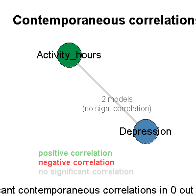

var_main(av_state, vars, lag_max = 2, significance = 0.05, exogenous_max_iterations = 2,
subset = 1, log_level = av_state$log_level, small = FALSE, include_model = NULL,
exogenous_variables = NULL, use_sktest = TRUE, restrictions.verify_validity_in_every_step = TRUE,
restrictions.extensive_search = TRUE, criterion = c("AIC", "BIC"), use_varsoc = FALSE,
use_pperron = TRUE, include_squared_trend = FALSE, normalize_data = FALSE, include_lag_zero = FALSE)
av_stateav_state.1 - When Jarque-Bera tests
fail, having exogenous_max_iterations = 1 will
only try with removing 3.5x std. outliers for the
residuals of variables using exogenous dummy variables.
2 - When exogenous_max_iterations =
2, the program will also try with removing 3x std.
outliers if JB tests still fail. 3 - When
exogenous_max_iterations = 3, the program will
also try with removing 2.5x std. outliers (not only from
the residuals but also from the squares of the residuals)
if JB tests still fail. av_state$data[[1]]).0 = debug,
1 = test detail, 2 = test outcomes,
3 = normal. The default is set to the value of
av_state$log_level or if that doesn't exist, to
0. If this argument was specified, the original
value of av_state$log_level is be restored at the
end of var_main.small argument of
Stata's var function, and defaults to
FALSE. This argument affects the outcome of the
Granger causality test. When small = TRUE, the
Granger causality test uses the F-distribution to gauge
the statistic. When small = FALSE, the Granger
causality test uses the Chi-squared distribution to gauge
the statistic.lag,
exogenous_variables, and
apply_log_transform. For example: av_state
<- var_main(av_state,c('Activity_hours','Depression'),
log_level=3, small=TRUE, include_model=list(lag=3,
exogenous_variables=data.frame(variable="Depression",
iteration=1,stringsAsFactors=FALSE),
apply_log_transform=TRUE))
var_info(av_state$rejected_models[[1]]$varest) The
above example includes a model with lag=3 (so lags
1, 2, and 3 are included), the model is ran on the
log-transformed variables, and includes an exogenous
dummy variable that has a 1 where values of
log(Depression) are more than 3.5xstd away from
the mean (because iteration=1, see the description
of the exogenous_max_iterations parameter above
for the meaning of the iterations) and 0 everywhere else.
The included model is added at the start of the list, so
it can be retrieved (assuming a valid lag was
specified) with either
av_state$accepted_models[[1]] if the model was
valid or av_state$rejected_models[[1]] if it was
invalid. In the above example, some info about the
included model is printed (assuming it was invalid).use_sktest = TRUE (the default), STATA's
sktest is used. When use_sktest = FALSE,
STATA's varnorm (i.e., the Jarque-Bera test) is
used.TRUE (the default),
all intermediate models in the iterative
constraint-finding method have to be valid. This ensures
that we always find a valid constrained model for every
valid model. If this argument is FALSE, then only
after setting all constraints do we check if the
resulting model is valid. If this is not the case, we
fail to find a constrained model.TRUE (the default), when the term
with the highest p-value does not provide a model with a
lower BIC score, we attempt to constrain the term with
the second highest p-value, and so on. When this argument
is FALSE, we only check the term with the highest
p-value. If restricting this term does not give an
improvement in BIC score, we stop restricting the model
entirely.'AIC' (the
default) or 'BIC'.use_varsoc is
FALSE, all lags from 1 to lag_max are
searched.use_pperron
is FALSE, all models will be evaluated both with
and without the trend variable. The trend variable is
specified using the order_by function.order_by function.This function returns the modified av_state
object. The lists of accepted and rejected models can be
retrieved through av_state$accepted_models and
av_state$rejected_models. To print these, use
print_accepted_models(av_state) and
print_rejected_models(av_state).
This function generates and tests possible VAR models for
the specified variables. The only required arguments are
av_state and vars.
av_state <- load_file("../data/input/Activity and depression pp5 Angela.dta",log_level=3) av_state <- group_by(av_state,'id')group_by: identified 1 groups based on distinct values for attribute 'id'av_state <- order_by(av_state,'Day') av_state <- add_derived_column(av_state,'Activity_hours','Activity', operation='MINUTES_TO_HOURS') av_state <- var_main(av_state,c('Activity_hours','Depression'),log_level=3)==================== var_main(av_state, vars = c("Activity_hours", "Depression"), log_level = 3) Starting VAR with variables: Activity_hours, Depression, for subset: 1 ==================== Done. Processed 9 distinct models, of which 2 were valid. Tested 18 of 72 ( 25.00%) of the combinatorial search space at the given lags (1, 2). Granger causality summary of all 8 unrestricted models: 100.00% Depression -Granger causes- Activity_hours (3 models +5 almost) (sign: 1 ~, 7 -) Granger causality summary of all 2 valid models: 100.00% Depression -Granger causes- Activity_hours (1 model +1 almost) (sign: 2 -) Granger causality summary of all 1 valid unrestricted models: 100.00% Depression -Granger causes- Activity_hours (1 almost) (sign: 1 -)
Granger causality plot saved to "Activity and depression pp5 Angela_1.pdf" (5403) Summary of all valid models: lag: 100.00% 1 (2 models) apply_log_transform: 100.00% TRUE (2 models) include_trend_vars: 100.00% FALSE (2 models) The valid models (sorted by AIC score): A: (AIC: 386.23 (orig: 45.718), BIC: 398.593 (orig: 58.081)) : Depression -Granger causes- Activity_hours (0.0417) Lag: 1 Log transform: YES Exogenous variables: Depression outliers (3.5x std. of res.): 27 Constraints: [lnActivity_hours]lnActivity_hours.l1 = 0 [lnDepression]lnActivity_hours.l1 = 0 Resulting Formulas: lnActivity_hours = lnDepression.l1 + const + Depression_outliers lnDepression = lnDepression.l1 + const + Depression_outliers B: (AIC: 388.391 (orig: 47.879), BIC: 404.875 (orig: 64.363)) : Depression almost -Granger causes- Activity_hours (0.0726) Lag: 1 Log transform: YES Exogenous variables: Depression outliers (3.5x std. of res.): 27 Constraints: none